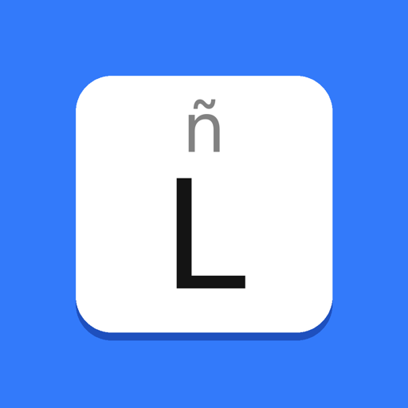

Leonera Keyboard build-45-ece338b claude/recording-keyboard-return-mjijop
Abre esta página en Safari desde el iPhone o iPad para instalar la app.
Solo se instala en los dispositivos registrados en el perfil Ad Hoc.
Instalación
- Toca Instalar y confirma.
- Espera a que el icono termine de descargarse en la pantalla de inicio.
- Ajustes › General › Teclado › Teclados › Añadir teclado › Leonera.
- Activa Permitir acceso completo.
Si aparece «No se puede instalar la app», el dispositivo no está en el perfil.